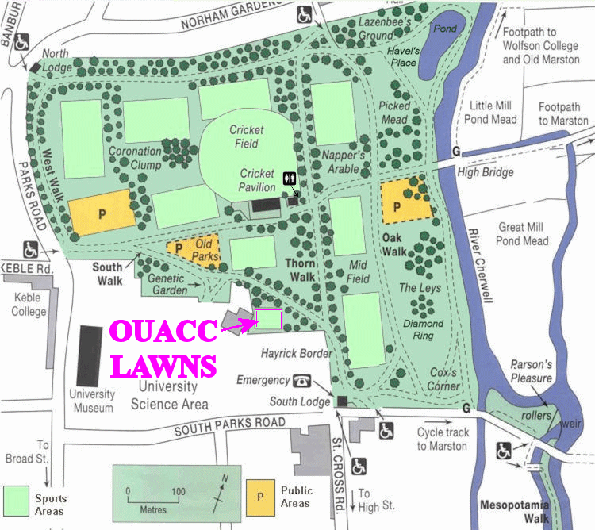

The Demonstration match will be held at the OUACC lawns in University Parks (see map below) 2pm 24th April 2022, Sunday 1st Week
Each year Oxford University Association Croquet Club puts on a demonstration match between two of our top players. This is a great opportunity for members of the University to see how croquet is played at its best. The intricacies of the game will be brought out by expert commentary, aided by summarising the rules.
The Players, 2022
Mark Baker, Teddy Hall (handicap 5, OUACC Captain 2018-2021)
Teddy Wilmot-Sitwell, Jesus (handicap 8, present OUACC Captain)
This year, it is the old versus the new. Mark is an experienced player, having been captain of the OUACC for multiple years. He is also the only student to currently hold a half blue.
Yet the up-and-coming challenger, Teddy, has been eyeing up both those accolades. This may be his best chance to prove himself worthy of the mantle of OUACC captain.
How to find us

<!--